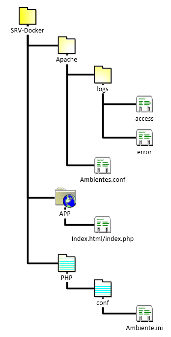

Se você chegou até aqui PARABÉNS, seu servidor está funcionando com o apache e o php e está pronto para que você consiga trabalhar no desenvolvimento de seus projetos.
A configuração que você encontrará aqui será a seguinte:
Para o apache você tem:
Para o php você tem:
O sistema todo tem uma pasta chamada APP, vista na imagem acima, e nela você pode colocar todo o seu código, que ele já reconhece o php para ser acessado no seu navegador. |